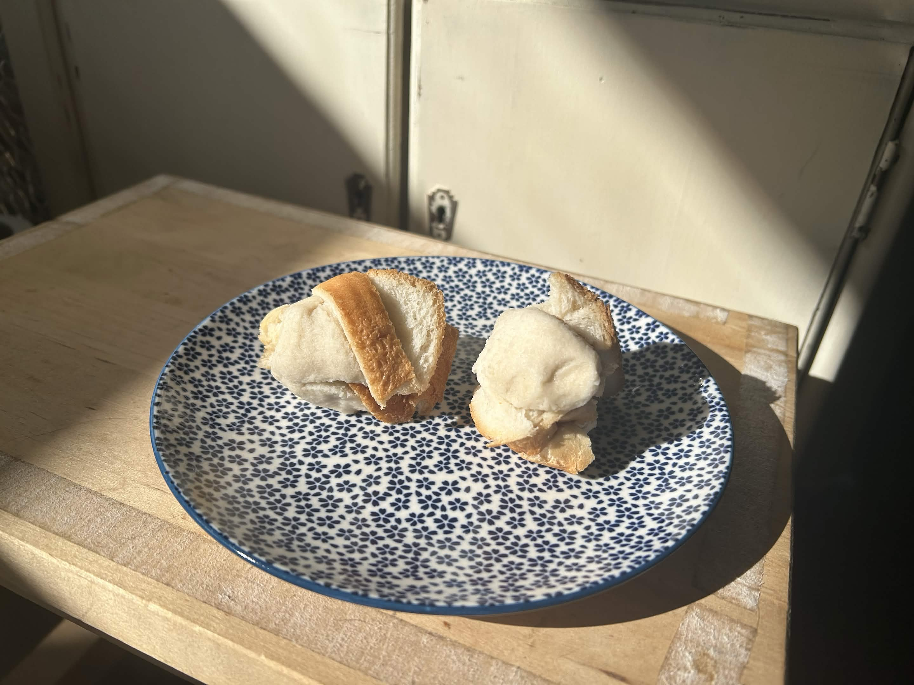

Home
Liquor Ball Sandwiches
A quick and easy breakfast with only a couple of ingredients and a reasonable amount of labour.

Ingredients
-
1 bottle of your favourite liquor — preferably vodka
-
2 slices of bread, white
Steps
-
Remove the 4 crusts from your slice of bread with a knife. If you're not scared keep them on.
-
Generously douse the uncrusted bread with your preferred alcoholic liquid.
-
By hand, scrunch and roll the soggy bread into small balls.
-
Consume and enjoy.